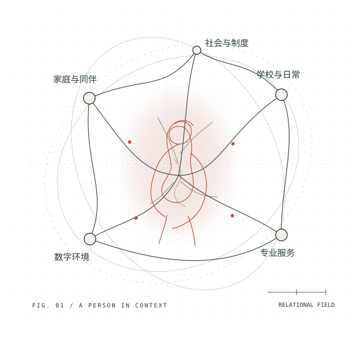

扶麟的个人文集 VOL. 01 — 2026
把一个人，
放回他的世界。
我关心人的感受，也关心感受背后的关系与环境。
在社会科学与医学之间，学习理解，尝试行动。
社会科学 × 医学人文 × 创意表达人始终在其中。

我反复回到的问题
支持从哪里来？ ／ 关系怎样继续？ ／ 制度如何回应？
01 / SELECTED NOTES
全部文章 ↗从这里读起
02 / ABOUT THE AUTHOR你好，
你好，
我是扶麟。
我是一名高中学生，也在心理志愿者联盟参与组织管理、培训与研究工作。
青少年心理支持是我持续关心的方向。我喜欢把理论带回具体的问题：一次回应、一节课、一段交接，或者一项能够被理解和使用的制度。
这里也留了一些位置给音乐、设计和普通的学习日常。
多了解一点 ↗03 / EXPLORE
五条线，慢慢展开
把问题问得具体一点，
也为还没有答案的部分，留一点位置。